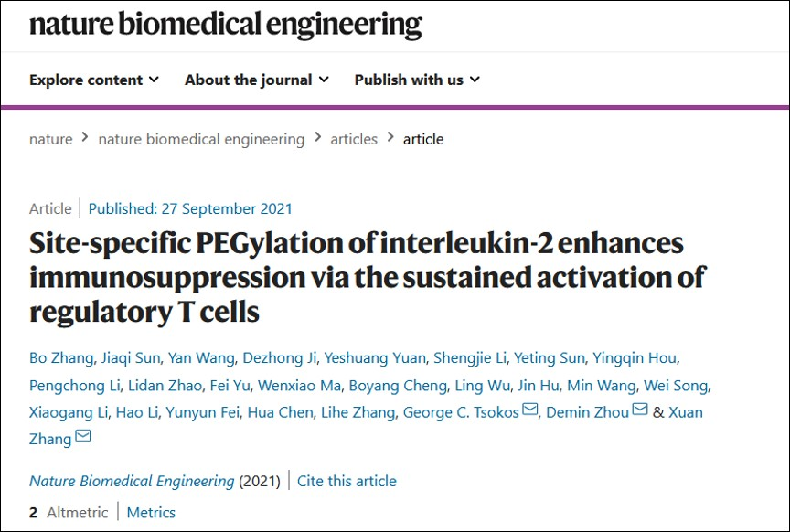
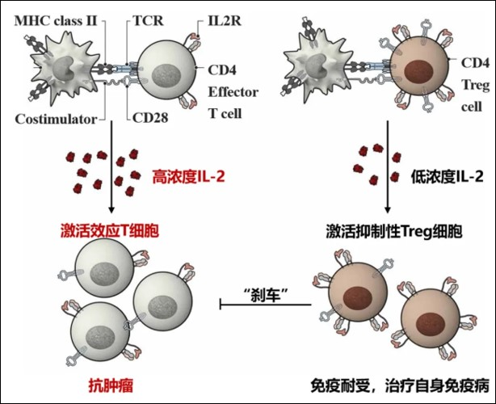
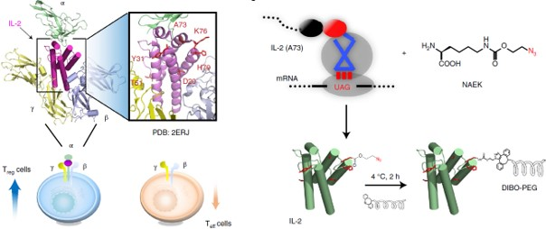

2021年9月27日，本课题组与协和医院免疫风湿科张煊教授合作，在长效靶向调节性T细胞的细胞因子类药物治疗自身免疫性疾病方面取得重要进展。相关成果发表在权威期刊《Nature Biomedical Engineering》上，题目为“Site-specific PEGylation of interleukin-2 enhances immunosuppression via the sustained activation of regulatory T cells”（定点PEG修饰IL-2使其持续激活调节T细胞并增强其免疫抑制作用）。
自身免疫病是一类人体自身免疫系统攻击正常细胞并造成免疫能力异常，最终导致器官功能性障碍的慢性炎症性疾病。目前，广谱的免疫抑制剂、激素等仍为临床上普遍应用的治疗方案，其副作用强、药效个体化差异等问题困扰着自身免疫病的治疗，研发新型的自身免疫病治疗性药物具有重要意义。

IL-2的通过激活效应细胞及调节T细胞，兼具免疫抑制及免疫激活双重作用
白细胞介素-2（Interleukin-2）是一种可作用于多种淋巴细胞的关键细胞因子。低剂量注射白细胞介素-2（IL-2）通过偏向性激活调节T细胞（Treg），可以起到有效的抑制病理性免疫和治疗自身免疫病的效果；然而由于IL-2的多效性，不适剂量的IL-2也会非靶向地激活效应细胞和免疫系统，加速疾病进程。同时，IL-2分子量小半衰期短，需要频繁注射给药以维持自身免疫病治疗所需要的低剂量有效浓度。数十年来IL-2因其复杂的药物性质及可能导致的严重副作用，严重限制了这种有潜力的细胞因子在自身免疫病治疗中的应用。如何有效解决IL-2的上述问题，提高其在自身免疫病等炎症类疾病中的有效性和安全性构成了亟待解决的关键科学问题。

精准修饰IL-2类药物对调节性T细胞的靶向激活作用示意图
本课题组与协和医院免疫风湿科张煊教授合作，利用基因密码子扩展技术对IL-2蛋白进行精准的聚乙二醇（PEG）修饰，调整IL-2与其三种亚型受体的亲和力和偏向性，实现持久且靶向性地激活调节性T细胞（Treg）、减轻炎症反应的目标。基础实验结果表明，在IL-2的Y31和T51位点同时进行20K-PEG修饰，其对IL-2Rβ的亲和力明显降低，表现出对Treg细胞的靶向激活作用。临床前实验表明精准PEG修饰不仅实现了药物的均一性和提高了血清稳定性，还拓展了药物的治疗窗，在类风湿性关节炎、系统性红斑狼疮、移植物抗宿主病等多种疾病模型中表现出良好的治疗效果，扩宽了细胞因子IL-2类大分子药物在免疫治疗中的应用前景。
这项研究得到基金委、科技部和创新药物专项多个基金的长期支持。
医学部新闻网：http://www.bjmu.edu.cn/yjcg/6f89a5d95d70426e8c9d87789a7623d3.htm
国重室新闻网：http://sklnbd.bjmu.edu.cn/news/Research_news/2021-09-27/1868.html